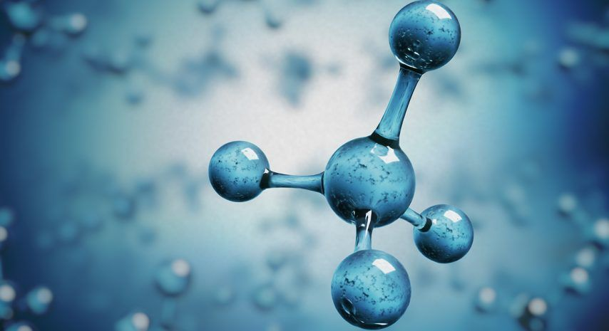

HIDRÓGENO
El hidrogeno es el elemento quimico mas simple, el primero de la tabla periodica con numero atomico 1. Es ligero, se piede almacenar y genera emisiones contaminantes por si mismo. Con estas caracteristicas resulta un candidato perfecto como combustible.
El hidrógeno es el elemento químico más abundante, al constituir aproximadamente el 75 % de la materia visible del universo. En su secuencia principal, las estrellas están compuestas principalmente por hidrógeno en estado de plasma.
Por lo general, se presenta en su forma molecular, formando el gas diatómico H2 en condiciones normales. Este gas es inflamable, incoloro, inodoro, no metálico e insoluble en agua.
Es el elemento químico más ligero que existe, su átomo está formado por un protón y un electrón, es estable en forma de molécula diatómica. En condiciones normales se encuentra en estado gaseoso, y es insípido, incoloro e inodoro.
Su masa atómica es 14,0067 g/mol y su densidad es 0,81 g/ml. Su punto de ebullición es de -195,79 ºC y su punto de fusión es de -218,8 ºC.

El hidrógeno es el elemento más abundante del Universo, y el primero que se formó después del Big Bang, formando grandes nubes moleculares que más tarde se convertirían en las primeras estrellas. De hecho, el hidrógeno es el combustible principal de las estrellas, en las que se fusiona para producir una gran cantidad de energía y helio como resultado. En nuestro planeta se trata de un elemento omnipresente que representa 0,14 % de la masa total.